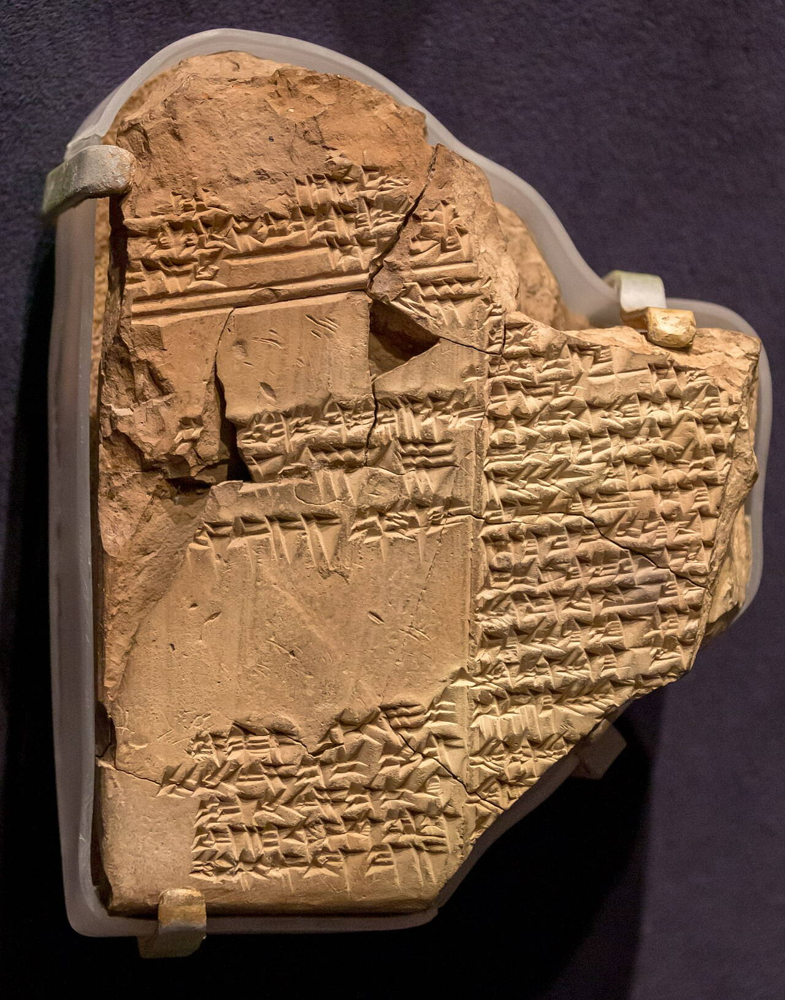

OTIUM — практика нарочитого досуга. В античном смысле otium — не побег от работы, а время, когда внимание возвращается к памяти, пейзажу и мысли — без прикладного дедлайна.
Мы выстраиваем маршруты для неспешного присутствия, а не для чек-листа достопримечательностей: важно быть в месте, а не «потреблять» виды.
OTIUM — не туроператор. Это приглашение пройтись, остановиться и оставить маршрут незавершённым, если свет на фасаде заслуживает ещё минуты.
Исторические и справочные гербы
New York
Путеводитель. Объектов в этом выпуске: 42.
Историческая справка
Нью-Йорк — крупнейший город США, мировой финансовый и культурный узел.
Голландская колония Новый Амстердам, иммиграционные волны и небоскрёбы XX века сформировали плотную сетку кварталов. Манхэттен, музеи, театры и парки делают город символом модерна и свободы передвижения.
Великая депрессия и послевоенный бум небоскрёбов сформировали Манхэттен; кризис 1970-х сменился гентрификацией и ростом финансового сектора. 11 сентября 2001 года изменило нижний Манхэттен; город остаётся символом миграции и культурного многообразия.
American Museum of Natural History
Upper West Side
Адрес: 200 Central Park West, Upper West Side | Стиль: Romanesque Revival core with many expansions | Период: 1877 onward; Theodore Roosevelt Memorial 1936
Blue whale, dinosaurs, and the Hayden Planetarium complex draw families and researchers.
Факты и детали
Linked to Columbia and scientific expeditions since the Gilded Age.
Filming location for a famous overnight children's story.
История
Started from suppressed Victorian cabinets of curiosity into a global natural-history powerhouse.
Значение
Defines the park-facing museum row on the Upper West Side.
At New York City 2024 456.jpg
At New York City 2024 456.jpg
Адрес: See official visitor information.
Bethesda Terrace and Fountain
Central Park
Адрес: Mid-park near 72nd Street Cross Drive, Central Park | Стиль: Victorian Gothic/Renaissance Revival park architecture | Период: 1850s–1860s (terrace and fountain)
The Angel of the Waters crowns the fountain; the lower passage's tiles are a favorite acoustic stop.
Факты и детали
Calvert Vaux and Jacob Wrey Mould shaped much of the ornament.
Central Park's intellectual heart between the Mall and the Lake.
История
Planned as a scenic pause in Olmsted and Vaux's greensward; restored in the late 20th century.
Значение
One of the most filmed and photographed gathering places in the park.
Brooklyn Bridge
East River
Адрес: Spanning East River between Manhattan and Brooklyn | Стиль: Neo-Gothic stone towers, steel-wire suspension | Период: 1869–1883
Pedestrians, cyclists, and vehicles share the deck; the elevated promenade is a classic skyline walk.
Факты и детали
John A. Roebling designed it; family members and engineers completed it after his death.
Among the first major suspension bridges using steel cables.
История
A long, dangerous construction story beneath river caissons; opened as a symbol of unified New York.
Значение
Defines the silhouette of Lower Manhattan and Dumbo; still a working artery.
Brooklyn Public Library (Central)
Grand Army Plaza
Адрес: 10 Grand Army Plaza, Brooklyn | Стиль: Art Deco limestone landmark (Alfred Morton Githens & Francis Keally) | Период: 1941
Grand lobby inscribed with gold authors; massive reading room beneath the facade's clock.
Факты и детали
Main borough lender for Brooklyn's independent library system.
Facades mix literary references with streamlined Deco geometry.
История
Depression-era WPA optimism cast as a palace for the people facing Prospect Park.
Значение
Counterweight to Manhattan's NYPL in borough cultural identity.
The Main Concourse sky ceiling and Tennessee marble are civic theater for commuters.
Факты и детали
Saved from demolition by landmark campaign and judicial fight, 1970s.
Whispering galleries play tricks along the Guastavino tile vaults by the Oyster Bar.
История
Replaced an earlier station; electrification and urban design made it a model hub.
Значение
Interior landmark and working terminus for Metro-North.
High Line
Elevated park
Адрес: Elevated from Gansevoort Street to 34th Street, West Side | Стиль: Adaptive reuse linear park (Field Operations, Diller Scofidio + Renfro) | Период: Rail viaduct 1930s; park phases 2009–2014+
Native plantings, art installations, and peek views of the Hudson and street life.
Факты и детали
Friends of the High Line advocated saving the abandoned structure.
Spurred similar elevated-park ideas in other cities.
История
West Side freight line fell quiet; threatened demolition became a design competition and civic project.
Значение
Model of post-industrial greenspace amid dense Chelsea and Hudson Yards.
Intrepid Sea, Air & Space Museum
Hudson River
Адрес: Pier 86, Hudson River at 46th Street, Hell's Kitchen | Стиль: Essex-class fleet carrier as naval exhibit | Период: Aircraft carrier commissioned 1943; museum 1982
Flight deck holds jets; below decks explore service life; submarine Growler and Space Shuttle Enterprise augment the fleet.
Факты и детали
Served in World War II, Cold War, and Vietnam before decommission.
Towed upriver after a failed Florida home bid; storm Sandy flooded galleries.
История
Zachary Fisher and veterans championed a floating museum when NYC waterfronts were derelict.
Значение
Most visited naval museum experience on the Eastern Seaboard.
Lincoln Center for the Performing Arts
Upper West Side
Адрес: 10 Lincoln Center Plaza, Upper West Side | Стиль: Modernist performing-arts campus (Harrison & Abramovitz et al.) | Период: 1960s campus; David Geffen Hall renovated 2020s
NY Philharmonic, Met Opera, NYCB, Juilliard, and film society share the superblock.
Факты и детали
Urban renewal cleared San Juan Hill tenements for the complex.
Revson Fountain and travertine plazas host free summer events.
История
Cold War-era bet that high culture needed a purpose-built acropolis.
Значение
Default brand name for serious music, dance, and opera in America.
Morgan Library & Museum, New York 2017 35.jpg
Morgan Library & Museum, New York 2017 35.jpg
Адрес: See official visitor information.

National September 11 Memorial
World Trade Center site
Адрес: 180 Greenwich Street, World Trade Center site | Стиль: Michael Arad & Peter Walker memorial pools in twin footprints | Период: Memorial pools opened 2011
Names ring each pool; the adjacent museum presents the attacks and aftermath.
Факты и детали
Water cascades into voids occupying the north and south tower outlines.
Survivor tree and plaza inscribe resilience into the site.
История
Contest-led design after years of debate over rebuilding at Ground Zero.
Значение
Primary national locus of remembrance for September 11, 2001.
Seat of the Archbishop of New York; major Roman Catholic liturgies.
Crypt holds notable archbishops and cardinals.
История
Built as immigrant Catholicism grew into a metropolitan presence.
Значение
Spiritual counterweight to the commercial towers of Fifth Avenue.
Statue of Liberty
Liberty Island
Адрес: Liberty Island, New York Harbor | Стиль: Neoclassical copper statue, internal Gustave Eiffel frame | Период: Dedicated 1886
Frédéric Auguste Bartholdi's colossal figure faces the harbor, torch raised. Ferries run from Battery Park and Liberty State Park.
Факты и детали
Gift from France; tablet shows July 4, 1776 in Roman numerals.
Copper sheets oxidized to the familiar green patina over decades.
История
Conceived in the 1860s–70s as a monument to republican ideals; erected in stages with fundraising on both sides of the Atlantic.
Значение
International icon of asylum and self-government, seen by generations arriving by sea.
Stonewall National Monument
Christopher Street
Адрес: Christopher Street and surrounding blocks, Greenwich Village | Стиль: Vernacular bar storefront in historic district | Период: Inn rebuilt; national monument designated 2016
Small park faces the bar where 1969 uprisings catalyzed modern LGBTQ+ politics.
Факты и детали
First U.S. national monument for LGBT history.
Still operating as a bar with pilgrimage traffic.
История
Mafia-run nightlife met police raids; nights of protest shifted public consciousness.
Значение
Pilgrimage site equal in many itineraries to older civil-rights landmarks.
Tenement Museum
Lower East Side
Адрес: 97 Orchard Street, Lower East Side | Стиль: Italianate immigrant housing, restored apartments | Период: 1863 tenement; museum 1988–
Guided building tours recreate households from German, Jewish, Italian, and later waves.
Факты и детали
Founder Ruth Abram and historians pieced together oral and archival lives.
Premises were sealed mid-century, preserving layers of wallpaper and fixtures.
История
From overcrowded flats to abandonment, then careful interpretation as social history.
Значение
Makes concrete how migration built the city's density and politics.
The Metropolitan Museum of Art
Fifth Avenue
Адрес: 1000 Fifth Avenue, Upper East Side | Стиль: Beaux-Arts façade with many later wings | Период: Main building phases 1874 onward
Encyclopedic collections span continents; the Temple of Dendur wing is a signature space.
Факты и детали
Founded 1870; moved uptown as collections outgrew early sites.
The Met Cloisters in Fort Tryon Park holds medieval art.
История
Grew from civic ambition into one of the world's largest museums, continually adding galleries.
Значение
Anchor of Museum Mile and a reference museum for global art history.
Ambitious climbable landmark; access policies have shifted after safety reviews.
Факты и детали
Part of the Hudson Yards megaproject over working rail yards.
Nicknamed for its ship-like silhouette amid towers.
История
Conceived as street-level art destination beside The Shed and retail podium.
Значение
Polarizing emblem of 21st-century luxury development on the West Side.
Times Square
Broadway and 7th Avenue
Адрес: Broadway and Seventh Avenue, Midtown | Стиль: Urban theater district, electronic signage | Период: Longacre Square renamed 1904; rebuilt many times
Duffy Square's red steps and the bow-tie of intersections pack crowds year-round.
Факты и детали
Named for The New York Times after it moved its headquarters here.
New Year's Eve ball drop began in 1907.
История
Seedy mid-century decades gave way to corporate-led cleanup and LED spectaculars.
Значение
Default image of Midtown energy and American popular spectacle.
Top of the Rock
30 Rockefeller Plaza
Адрес: 30 Rockefeller Plaza, observation decks | Стиль: Art Deco tower terraces with glass windscreens | Период: Observatory reopened 2005
Three levels look toward the Empire State Building and Central Park without cage obstruction.
Факты и детали
Timed tickets manage crowds versus street-level neighbor buildings.
Includes the famous sky mural lobby downstairs in the same complex.
История
Part of Rockefeller Center's tourism layer after radio and NBC studios matured.
Значение
Preferred angle for classic Midtown night photography.
Trinity Church
Broadway at Wall Street
Адрес: 75 Broadway at Wall Street, Financial District | Стиль: Brownstone Gothic parish church and active graveyard | Период: 1846 church (Richard Upjohn Gothic Revival)
Spire once dominated the skyline; graveyard holds Hamilton and early elites.
Факты и детали
Wealthy pew rents funded outreach; outreach continues through downtown ministry.
The third church on the site after fires and growth.
История
Episcopal flagship as New York rose from port to financial capital.
Значение
Liturgical calm amid stock-exchange turbulence.
Trinity Church, New York.jpg
Trinity Church, New York.jpg
Адрес: See official visitor information.
United Nations Headquarters
First Avenue
Адрес: 760 United Nations Plaza, First Avenue, Turtle Bay | Стиль: International Style secretariat slab (Wallace Harrison board) | Период: 1947–1952 complex
Guided tours pass General Assembly and Council chambers along the East River.
Факты и детали
John D. Rockefeller Jr. bought the site; jurisdictional quirks make it extraterritorial.
Le Corbusier, Oscar Niemeyer, and others debated the tower-and-plaza scheme.
История
Headquarters moved from successively cramped interim spaces after World War II.
Значение
Only major UN campus in the United States; symbol of postwar multilateralism.
Washington Square Arch
Greenwich Village
Адрес: Washington Square Park, Greenwich Village | Стиль: Monumental marble arch (Stanford White after earlier wood versions) | Период: 1889 (white Tuckahoe marble)
Frames Fifth Avenue vistas; the park is a neighborhood living room.
Факты и детали
Commemorates George Washington's centennial; reliefs added later.
Former potter's field underground still stirs ghost stories.
История
Evolved from parade decoration to permanent arch as the Village gentrified around it.
Значение
Village counterculture, street music, and NYU life converge here.
Whitney Museum of American Art
Meatpacking District
Адрес: 99 Gansevoort Street, Meatpacking District | Стиль: Stepped concrete and steel museum (Renzo Piano) | Период: 2015
Outdoor terraces stagger down toward the High Line; collection emphasizes American art since 1900.
Факты и детали
Moved from the Upper East Side Breuer building (now leased to another museum).
Biennial exhibitions here steer national art-world conversation.
История
Gertrude Vanderbilt Whitney's studio collection became a museum opposed to Eurocentric defaults.
Значение
Flagship institution for living U.S. artists and downtown starchitecture.
Yankee Stadium
The Bronx
Адрес: 1 East 161st Street, The Bronx | Стиль: Retro-classical ballpark with modern amenities | Период: Current stadium opened 2009
Home of the Yankees; Monument Park honors franchise legends.
Факты и детали
Replaced the 1976 renovated House That Ruth Built across 161st Street.
Hosts soccer and concerts beyond baseball season.
История
Public financing debates accompanied the move; neighborhood redevelopment followed.
Значение
Commercial and ritual center of Major League Baseball's most storied franchise.